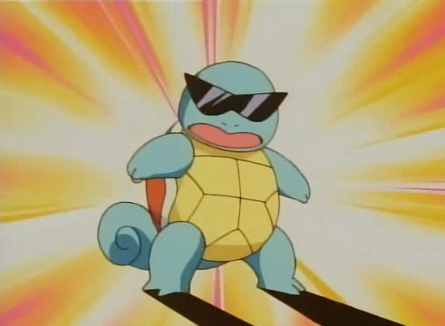

Contact
Squirtle 007
Cerulean City, Kanto
squirtle@pokeguild.com
linkedin.com/in/squirtle
Skills:
Water-Type Mastery:
Proficient in Water Gun and Hydro Pump techniques
Skilled in creating protective water barriers
Leadership & Teamwork:
Led a Squirtle Squad in the past, showcasing leadership qualities Collaborative team player in group battles
Adaptability:
Quick adjustment to various environments
Ability to learn and adapt to new moves and strategies
Shell Defense:
Natural defense mechanism with a sturdy shell
Tactical use of Withdraw for protection
Education:
Pokemon Trainer School
Completed foundational training in battle techniques and strategy
Graduated with honors in Water-type proficiency
Cerulean City Pokémon Gym
Apprenticeship under Misty to refine Water-type abilities
Experience:
Pokémon Battler
Engaged in numerous battles, demonstrating strategic thinking and adaptability
Successfully defeated opponents of various types
Squirtle Squad Leader
Led a group of Squirtle in mischief and pranks
Fostered teamwork and camaraderie within the squad
Cerulean City Gym Apprentice
Trained under Misty, gaining insights into Water-type battle strategies
Provided support in gym battles against aspiring Trainers